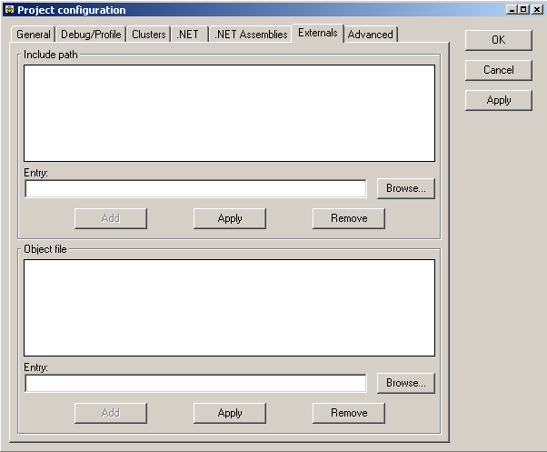
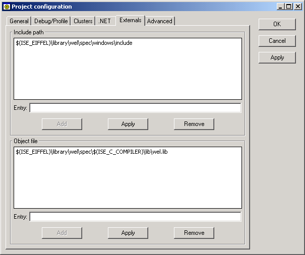

This tab is only active when standard C generation is selected in the General Tab. Even when it is selected, you will find that most Eiffel projects do not include C external libraries and therefore the tab is not filled. In the case of the calculator example, here is what you will get:

This tab needs to be filled when compiling projects that use some C libraries. In the case of the ISE Eiffel libraries, here is a non-exhaustive list that needs some entries in this tab:
This is where you can enter the location of the directories where the C compiler will look for the header files that are required. The header files which the C compiler will look for are the ones that appear in an encapsulation of a C external in an Eiffel class. Click here to have more information about C/C++ externals specification.
When you use an external C/C++ library what you have is header files and library files. We have seen how to include the header files, in this part you can select the inclusion of the library files.
Here is what you will need to have if you are creating a project that is using WEL:
